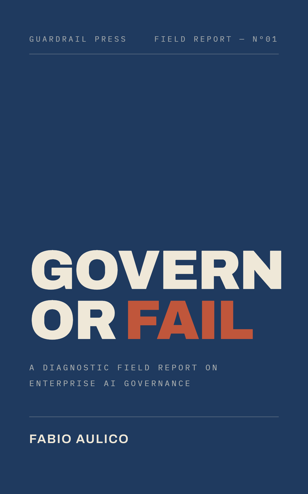

Guardrail PressField Report — N°01
Govern or Fail
A Diagnostic Field Report on Enterprise AI Governance
Enterprise AI rarely fails in the demo. It fails when the organisation cannot own what happens in production.
Govern or Fail is a diagnostic field report on why AI governance breaks down inside real organisations, and why policies, committees, and certification are not enough without runtime evidence.
Launching September 2026

Map your AI estate in one afternoon
Take the 3-minute Quadrant assessment — free, instant result. Your edition of the full instrument (position, direction of travel, first three moves, scoring rubric) arrives by email.
Take the assessment01 — The problem
The demo proves capability. Production tests governance.
Most enterprise AI programmes do not collapse because the model cannot produce a useful answer. They collapse because the surrounding organisation was not designed to control the answer, evidence it, recover from it, or own the consequences.
Shadow AI
The official inventory rarely matches the actual estate.
Governance theatre
Policies and committees describe intent. They do not prove production control.
Runtime evidence
When a decision is challenged, the organisation needs traces, logs, sources, versions, and ownership.
Borrowed speed
Ungoverned AI looks fast until every deployment repeats the same hidden negotiation.
02 — The argument
AI governance is not a compliance wrapper. It is production architecture.
The book follows a simple argument: AI governance becomes real only when ownership, data boundaries, monitoring, evidence, human oversight, and recoverability are built into the path through which AI reaches production.
“You can describe governance in a policy. You can only demonstrate it in production.”
03 — Readers
Written for people who have to make AI real, not just talk about it.
- CIOs, CTOs, and CISOs
- Risk, compliance, legal, and audit leaders
- Enterprise architects and platform teams
- AI programme owners and transformation leaders
- Board members and senior executives separating AI theatre from operating capability
No prior technical depth is assumed. The book is written for senior business and technology readers who carry responsibility for outcomes.
04 — The approach
Not a legal manual. Not a vendor brochure. Not another maturity model.
Diagnostic, not decorative
The book focuses on recurring failure patterns: shadow AI, weak ownership, brittle pilots, uncontrolled retrieval, missing evidence, and systems that are certified but not governed.
Enterprise-first
The argument is built around real operating conditions: legacy systems, fragmented data, procurement, audit, human review, vendor features, and delivery pressure.
Evidence over intent
The central question is not whether the organisation supports responsible AI. The question is whether it can demonstrate what the system did.
05 — Contents
Inside the book
Part One
Why AI Fails at Scale
- 01The Pattern Is Older Than AI
- 02The 2026 Shift
- 03The Language Problem
Part Two
Where It Breaks in Practice
- 04Just Because You Can Does Not Mean You Should
- 05The Misdiagnosis Problem
- 06Architecture Beats Culture
Part Three
The Hard Conditions
- 07Why AI PoCs Die After the Demo
- 08Determinism in an Agentic World
- 09The Technical Layer Executives Cannot Ignore
- 10Certified Is Not Governed
Part Four
Strategic Consequences
- 11The Velocity Argument
- 12From Compliance to Operating Capability
The book does not end with a generic toolkit. That is deliberate. Its purpose is to help leaders see the failure clearly enough to stop treating governance as ceremony and start treating it as an operating condition.
06 — Vocabulary
Core ideas
- Governance debt
- Every ungoverned deployment is a liability the organisation has not yet priced.
- Shadow AI
- The AI estate that exists in practice but not in the inventory.
- Runtime evidence
- Traces, logs, sources, and versions that show what the system actually did.
- Described vs demonstrated
- A policy describes governance. Only production behaviour demonstrates it.
- Deterministic control
- Fixed boundaries and controls built around systems whose outputs are probabilistic.
- Governed velocity
- Speed that survives audit, because the path to production is designed, not negotiated.
- Certified is not governed
- A certificate attests a point in time. Governance operates continuously.
- Architecture beats culture
- Structural controls outlast good intentions, training sessions, and slogans.
Resources and source notes
The book relies on public cases, regulatory records, company disclosures, published research, and cited standards. Source notes and selected references are available here.
Read source notesFor discussions, reviews, or speaking
For enterprise AI governance discussions, book enquiries, podcast invitations, or speaking requests, contact the author.
Contact FabioPrefer email to a quiz?
Get the complete instrument — all four positions included — plus launch notification and occasional essays. No spam, unsubscribe anytime.
Govern or Fail
Enterprise AI does not become governable because a committee approves it. It becomes governable when the organisation can prove what happened, who owned it, and how the system was controlled in production.
Launching September 2026 — see where your estate stands now.
Take the assessment